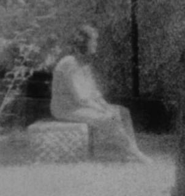

Hứa với bạn, chuyện sau đây hoàn toàn thiệt 100%. Không thêm bớt chút nào hết
Chuyện xảy ra lâu rồi, lúc đó ba tôi vẫn còn và đang đau nặng nằm ở bệnh viện hơn hai tháng. Trong khoảng thời gian này tôi và thằng em chia nhau ngày chẵn ngày lẻ, đêm nào cũng có một đứa vào ở lại đêm với ba. Nói nào ngay, cho dù là bệnh viện ở Mỹ cũng không thể nào chu tất cho tất cả bệnh nhân cả ngày 24 tiếng được. Ban ngày thì nhân viên y tá đông đảo, bác sĩ đi khám thường xuyên nên tương đối mọi việc đều chu đáo. Nhưng đến đêm thì rất khó khăn bởi vì bệnh nhân thì vẫn vậy, nhưng y tá và y công bị giảm đi nhiều nên khó mà lo cho hoàn hảo tất cả. Không phải là họ bê trễ, mà vì nhân viên ít nên phải làm việc gấp rút mới đủ thì giờ lo cho đủ chừng đó người. Thông thường thì bệnh viện không cho thân nhân ở lại đêm, nhưng cũng có vài trường hợp ngoại lệ như ba tôi là bệnh nhân dài hạn mà không nói được tiếng Mỹ nên rất khó khăn cho cả bệnh nhân lẫn y tá mỗi khi cần thiết. Cho nên, tôi được họ cho ở lại để giúp đỡ săn sóc thêm cho ba, và nhân tiện cũng thỉnh thoảng giúp họ thông dịch dùm cho một vài cụ bệnh nhân VN khác gần đó, đêm hôm khuya khoắt không có con cháu bên cạnh để nhờ cậy…

.Bạn có thể hình dung bệnh viên là một hình vuông có 4 cạnh và 4 góc. Tại mỗi góc đều có một nhà vệ sinh restroom. Phòng của ba tôi nằm gần cuối dãy nên rất gần với nhà vệ sinh này. Dãy bên kia vốn không có phòng nằm của bệnh nhân mà chỉ là khu phòng Lab và hồi phục ( Rehab Area), tức là dành cho những bệnh nhân tập đi đứng trở lại sau thời gian nằm bệnh. Cho nên trọn một dãy đó chỉ sinh hoạt ban ngày. Ban đêm là tối om không một bóng người lai vãng.
Một đêm khoảng hai ba giờ sáng, tôi đau bụng. Giải quyết xong xuôi về phòng rồi mới nhớ là để quên tờ báo trong restroom, bèn trở lại lấy. Tôi mới vừa trở về phòng rồi trở ra lại chỉ khoảng hai ba phút chơ mấy, vậy mà khi tới restroom đã thấy đã có 4 người ngồi chung trên một cái ghế nhỏ trước cửa tự hồi nào. Đàn ông lẫn đàn bà, cả Mỹ lẫn Á châu. Tôi biết có bốn người cả thảy, nhưng trời tối vì khu bên kia không có y tá hay sinh hoạt nào ban đêm cả, nên thực sự chỉ thấy mờ mờ vậy thôi, trừ mặt một người đàn ông Á châu lớn tuổi là thấy rõ ràng nhứt. Tôi lúc đó cũng đã rất mệt mỏi, đầu óc mù mờ, có nghĩ gì xa xôi đâu. Cứ nghĩ rằng đây cũng là những người có thân nhân nằm bệnh như tôi, bỗng nhiên nữa đêm rủ nhau ra đây hóng mát. Tôi cảm thấy một sự thông cảm với họ vô cùng vì nghĩ rằng họ cũng mệt mỏi như mình. Chỉ thắc mắc và cảm thấy tức cười là cả 4 người như vậy mà cũng ráng chồng chất nhau trên cái ghế nhỏ mới lạ! Thấy tôi chào, người đàn ông Á châu đó gật đầu chào lại.
Bây giờ bạn thử đếm 1,2,3,4,5 sau cánh cửa rest room tôi bước vào 5 bước là lấy lại tờ báo, trở lưng bước 5 bước nữa là mười, trở ra khỏi cửa. Chỉ mười mấy giây thôi, tất cả bọn họ đều đâu mất! Tôi không để ý sự kiện lạ lùng trên, thản nhiên bước về phòng ba tôi, lúc đó mới ngồi suy nghĩ.
Tôi ở đây cả tháng hơn rồi, tên tuồi y tá bác sĩ đều thuộc, và nhất là những bệnh nhân quanh đây, ai nằm ở phòng nào tôi cũng khá rõ. Phòng của ba tôi là gần cái restroom này nhứt, rồi phải cách hai ba phòng nữa mới có một bệnh nhân khác. Bệnh nhân khu vực này tương đối ít so với mấy dãy kia, chỉ vài người, thì lấy đâu ra tới 4 người thăm nuôi ở lại đêm như tôi? Nếu có, tại sao tôi chưa bao giờ gặp? Luật của bệnh viện, đặc biệt lắm họ mới cho một người ở lại đêm nuôi bệnh. Vậy thì 4 người này phải có ít nhứt 4 bệnh nhân gần đây. Làm gì có! Hơn nữa 4 người nuôi bệnh này dĩ nhiên là không quen biết nhau, vừa Mỹ, vừa Á châu… không lý gì nữa đêm hai ba gìờ sáng hẹn nhau tới trước cửa restroom hóng mát. Nói cho đúng lúc đó đang mùa đông, ở trong phòng ấm cúng hơn nhiều. Ngồi đây chỉ là hóng lạnh thì có! Mà đã 4 người vừa Mỹ lẫn Á lại cùng chen chúc trên cái ghế nhỏ xíu chỉ cho hai chỗ ngồi mới thật lạ. Bởi vì như vậy phải có hai người ngồi chồng lên hai người kia! Chưa hết, như tôi đã đếm là chỉ 10 đến 15 giây thôi từ khi tôi bước vào bên trong lấy tờ báo, và trở ra, thì đã không thấy một ai. Tôi biết từ restroom này trở lại căn phòng gần nhất có bệnh nhân khác nằm ít nhứt cũng phải mười mấy mét, vậy thì không thể nào cả bốn người cùng về phòng của mình cùng lúc mau lẹ như vậy. Và nếu họ đi thì phài có tiếng chân giữa đêm khuya vắng như vầy chắc chắn tôi phải nghe. Hoặc là tiếng mở cửa đóng cửa chứ! Hoàn toàn không một tiếng nói chuyện hay một tiếng động nào cả. Không một chút gì chứng tỏ từng có 4 người mới đây chồng chất nhau trên một cái ghế nhỏ, rồi chỉ trong vòng 15 giây là tan biến đâu mất.
Bạn nghĩ sao?
Bình tĩnh tâm hồn suy nghĩ, tôi chắc mình đã gặp ma, nhưng n ói thiệt cũng không sợ lắm. Những ngày tháng đó, thương ba tôi bệnh tật triền miên, bổn phận làm con, anh em tôi chia nhau mỗi đêm. Nhưng dù tình thương tới đâu cũng không chối bỏ được sự mệt mỏi của thể xác vì thiếu ngủ cho nên sự cực nhọc của thể xác đã đè bẹp tất cả những nỗi sợ hãi khác.
Hôm sau, tôi hỏi người y tá quen làm ca đêm ở đây có ai như tôi được ở lại đêm nữa không. Hắn ngạc nhiên nói hoàn toàn không có ai. Tôi là trường hợp đặc miễn duy nhất mà thôi. Tôi kể chuyện này cho thằng em, vì nó cũng ở lại đêm với ba như tôi. Nó cũng nói là tuy chưa có dịp thấy mặt như tôi, nhưng thỉnh thoảng giữa đêm khuya phải dùng restroom này nó có cảm tưởng như có ai bên cạnh đang nói gì đó với nó. Tuy nhiên em tôi lại nghĩ vì tự kỷ ám thị, giữa đêm một mình thì yếu bóng vía vậy thôi. Hai đứa tôi đều già đầu, vợ con cả rồi mà nói sợ ma thiên hạ cười cho! Anh em mình biết với nhau thôi, đủ rồi.
Sau hôm đó, anh em tôi thay đổi đi restroom ở dãy đầu bên kia. Chịu khó đi xa một chút nhưng đằng kia đèn đuốc sáng hơn, và cũng gần với nurse station có y tá trực ngồi gần đó cho nó yên tâm.
Cái restroom này xin chừa.
( ThaiNC)